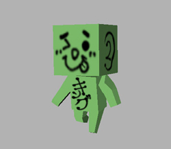
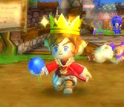

ステキ思い出
みなさま、
こんにちは、こんばんは、おはようございます。
はじめまして、御姓智宏と申します。
『王様物語』では、プログラムを担当させていただきました。
開発終了から時間がたち、今やユーザーの気持ちで、
ＨＰのチェックなどしている毎日ですが、
今回は、開発時のステキ思い出を振り返ろうと思います。
まずは、
『幻のＰＶ、プロトタイプ作成！』
2006年冬、プロトタイプ開発時は、リードデザイナーの松本・下川と
３人４脚で、四苦八苦しながら、実機側のシステム構築をおこなっていました。
初めてのWii開発でしたので、あーでもない、こーでもないと議論しつつ、
ひとつひとつ機能を確認しながらの実装です。
また、最終的なものとは異なった演出でしたが、人を集める、ひきつれる、
命令をする という要素も、組み込んでいました。
また、マーベラスでの企画プレゼンで使うＰＶを作るために、
締め切り前の１週間は、朝日に始まり、夜明けに終わる日々でした。
私が今まで体験してきたマスターとほぼ同等か、それ以上にハードでしたが、
「つらかった」よりも「めちゃめちゃ楽しかった」という思いが大きいです。
（今思うと、王様物語の本制作以上に、『こゆい』期間でした）
最終的にできあがった映像は、編集の妙もあり、
当時としては、いい映像になっていました。
（当時のＰＶ映像を久しぶりに見ましたが、懐かしさ満点でした。
グラフィックは、公開されているものと全然違いますが、
町の雰囲気は、今につうじるものを感じます。
このころは、「女教師」もいたんですよねぇ。）
このときまさに、『王様物語』という作品への、愛着が芽生えた時期ですね。
今となっては、王様物語での最初の「ステキ」思い出です。
実はこのとき、コロボよりも先に、初代王様が生まれていたのです、、、。
きっと、これが初公開。
これが初代王様です！

（↑プロトの王様です）
（↑こちらは今の王様！）
プロトの王様、憎いぐらい、いい動きをしていました。
（映像をお見せできないのが残念）
「コロボ」が誕生してからは、「王」の文字がとれた２代目が
本制作時にも、開発現場では活躍していました。
ゲーム本編には、このキャラから派生したキャラクターが登場しています。
どのキャラがそれか、皆様、ぜひ見つけてみてください。
次は、『全員集合！新☆開発室』、、と、いこうとしましたが、
長くなりそうですので、今回はここまでとさせていただきます。
最後に、
★『王様物語』のオススメポイント！★
ゲーム本編はもちろんのこと、タイトルデモの演出も、こっています！
王様物語を初めて起動した際は、タイトルデモはとばさず、
ゆっくりごらんくださいませ～。
先週末に公式ホームページもリニューアル！
雑誌にも情報がのりだしていますので、
皆々様、チェック！チェック！です。（もちろん、このブログも！）
それでは、みなさま
『王様物語』を、なにとぞ、よろしくお願いいたします。


 クリエイターズBLOG トップ
クリエイターズBLOG トップ